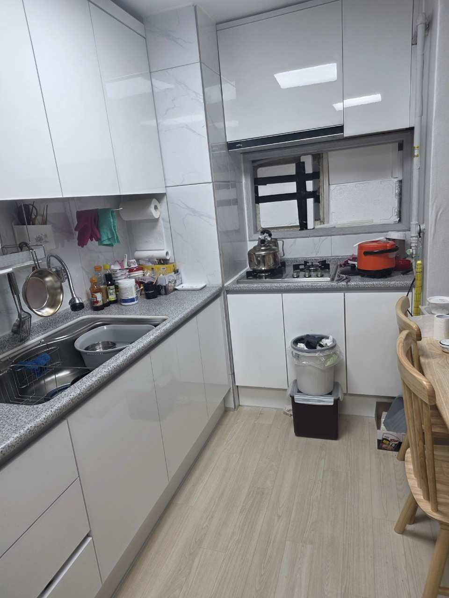
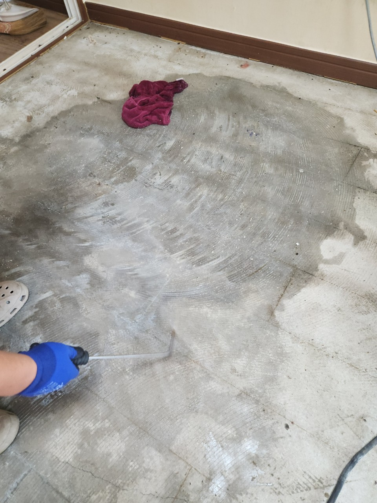

평수는 참고만 합니다. 갈매지구는 상자 수, 냉장고·침대 같은 대형 품목, 엘리베이터 사용 가능 여부가 더 중요합니다. 시작가는 45만원입니다.
경춘선 갈매역 · 갈매지구
갈매동 유품정리,
갈매동 유품정리,
갈매역 아파트 현장 상담
갈매동은 경춘선 갈매역을 중심으로 한 신도시형 주거지입니다. 별내와 붙어 있어 전월세 이동이 잦고, 세대 내부 짐과 베란다 적치가 한꺼번에 나오는 상담이 많습니다. 구리 올바른정리는 갈매동 유품정리를 단지 엘리베이터·지하 하역 기준으로 잡고, 적치가 심한 세대는 쓰레기집청소로 범위를 나눕니다.
SERVICE
구리시 갈매동에서 맡기는 작업
갈매지구는 이사 날짜가 정해진 상태에서 급하게 반출을 요청하는 경우가 많습니다.
유품정리
갈매동 아파트 유품 분류
상속·이관 후 남길 상자만 남기고 나머지는 동별 분리배출이 아니라 전문 반출로 처리하는 세대가 많습니다. 사진첩·계약서·도장은 작업 전 별도 구역에 모아 주시면 분류가 빨라집니다.
쓰레기집청소
갈매동 쓰레기집·이사 잔짐
입주 청소 전에 이전 거주자 쓰레기와 대형 가구가 남는 현장이 있습니다. 단지 관리사무소 반출 시간을 먼저 확인하고, 화물 승강기를 쓸 수 없으면 계단 인원을 늘립니다.
PRICE
갈매동 비용이 달라지는 지점
갈매동은 단지 반출 규정과 층수가 시작가 이후 가감의 핵심입니다.
* 부가세 별도 · 시작가이며 현장 확인 후 확정
유품정리
45만원 부터~
45만원부터이며, 방 개수보다 상자·가구 개수가 견적을 더 좌우합니다.
고독사 특수청소
80만원 부터~
밀폐된 방의 악취·오염이 확인되면 80만원대 특수청소 공정이 붙습니다.
쓰레기집·일반폐기물
30만원 부터~
이사 잔짐만이면 30만원대부터, 전 방 적치면 쓰레기집청소 인원이 추가됩니다.
GUIDE
갈매동에서 유품정리 견적은 어떻게 나오나요?
갈매지구는 평수보다 단지 반출 조건이 금액을 먼저 결정합니다.
갈매동 유품정리는 어떤 아파트에서 많이 문의되나요?
갈매역 도보권 대단지는 전용면적이 넓고 붙박이장·가전이 그대로 남는 경우가 많습니다. 유품정리는 고인의 물건을 유형별로 나눈 뒤, 가족이 가져갈 상자와 폐기 대상을 분리합니다. 갈매동은 서울·남양주 별내로 출퇴근하는 가족이 많아, 주말 방문 분류를 요청하는 비율이 높습니다.
갈매지구 쓰레기집청소는 일반 입주청소와 무엇이 다른가요?
입주청소는 표면을 닦는 일이고, 쓰레기집청소는 방·베란다·창고에 쌓인 폐기물을 비우는 일입니다. 갈매동 신축·준신축 임대는 이전 세입자가 남긴 봉투와 매트리스가 복도를 막는 사례가 있습니다. 이 상태에서는 청소업체만으로는 처리가 안 되고, 상차 차량이 필요합니다.
갈매역 인근에서 반출이 늦어지는 이유는 무엇인가요?
단지마다 화물엘리베이터 사용 시간, 지하 램프 높이, 방문 차량 등록이 다릅니다. 경춘선 출퇴근 시간과 겹치면 지하 회전이 느려집니다. 상담 시 동·호수와 관리사무소 연락 가능 여부만 알려주셔도 일정 오차를 줄일 수 있습니다.
갈매동 이사폐기물과 유품정리를 하루에 할 수 있나요?
보관 상자가 적고 특수청소가 없으면 당일 이어서 진행합니다. 유품 확인이 끝나지 않은 방은 손대지 않고, 이미 버린다고 표시된 방부터 상차합니다. 별내 방향 창고형 짐이 있으면 2차 방문으로 나눕니다.
갈매동 상담 시 필요한 정보는 무엇인가요?
동·호수, 엘리베이터 유무, 쓰레기집 여부, 남길 물건 유무, 희망 날짜입니다. 방 사진 3~6장이면 유품정리 45만원대인지, 쓰레기집청소 인원이 더 필요한지 범위를 바로 안내합니다.
PROCESS
갈매동 작업 순서
갈매동은 관리사무소 반출 규칙을 1단계에 넣습니다.
STEP 01
단지 규정 확인화물 승강기·지하 하역·방문 등록 가능 시간을 받습니다.
STEP 02
보관 상자 분리가족이 가져갈 유품을 현관 반대편에 모아 작업 공간을 엽니다.
STEP 03
세대 비우기적치물과 대형 가구를 지하로 내린 뒤 상차하고 세대 문을 닫습니다.



FAQ
갈매동에서 자주 묻는 질문
검색·AI 답변에 쓰일 수 있도록 이 지역 기준으로 짧게 정리했습니다.
구리시 갈매동 전 단지를 방문합니다. 별내 경계와 가까운 동도 갈매동 주소면 동일 권역으로 상담합니다.
됩니다. 갈매동은 베란다 적치만으로도 상차가 필요한 현장이 있습니다. 방 전체가 막혀 있으면 쓰레기집청소로 재분류합니다.
단지 규정만 되면 주말 상담도 가능합니다. 갈매동은 주말 요청 비율이 높아 날짜를 먼저 받아 둡니다.